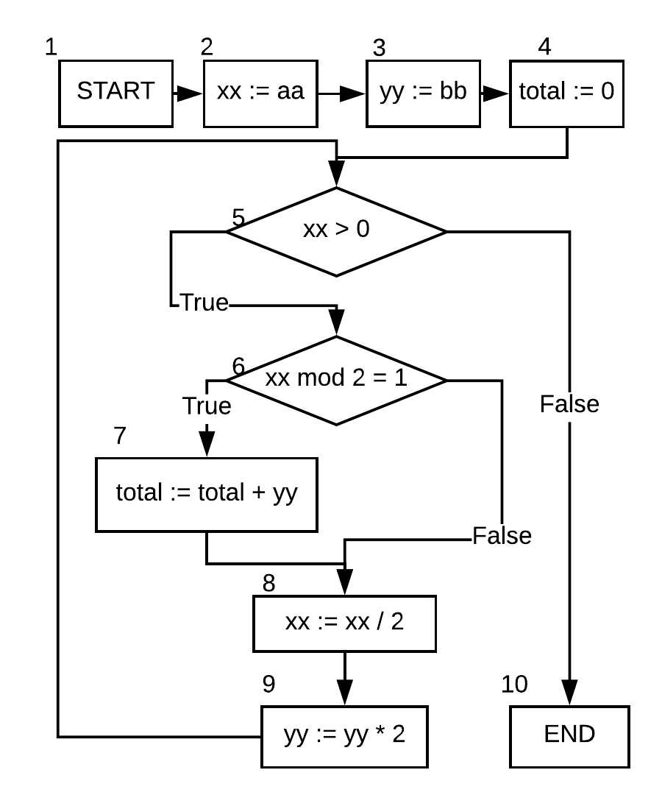

Roborês autonomos
Problemas relacionados.
Até que ponto dar a autonomia ?
Visão geral da Internet das Coisas (IoT)
O que é?
IoT é um paradigma inovador que está rapidamente ganhando terreno no cenário das telecomunicações sem fio moderna [Atori, Iera, Morabito, 2012].
Visão geral da Internet das Coisas (IoT)
A ideia básica é a presença generalizada em torno de nós de uma variedade de coisas ou objetos - como tags de identificação por radiofrequência (RFID), sensores, atuadores, telefones celulares, etc. Os quais podem interagir uns
com os outros e cooperar com seus vizinhos para alcançar metas comuns [Atori, Iera, Morabito, 2012]
Em outras palavras:
É uma rede de objetos físicos que possuem tecnologia embarcada com sensores e atuadores capazes de coletar e transmitir dados.
Onde IoT está?
Smartwatch
Celulares
Geladeiras
Hospitais
...
Na sua escola?
Na sua casa?
A casa do futuro chegou?
Uma cirurgia remota?
Quais atuais características tecnológicas favorecem o uso de IoT?
Baixo custo dos dispositivos embarcados;
Redução do consumo de energia;
Baixo custo dos sensores;
Aumento da conectividade dos dispositivos;
Uso de api externas (IBM platform - Bluemix/Google/Amazon);
Produção de muitos dados que podem ser explorados;
Aumento da capacidade das baterias e redução de tamanho.
Investimentos em IoT
Até 2020 haverá cerca de dois dispositivos conectados para cada pessoa na terra (Gartner,2017).
20 bilhões de dispositivos.
Cerca de 19 trilhões de dólares serão movimentados nesse segmento até o fim dessa década (EBC, 2017).
Investimentos estimados no mundo em 2015.
Motivation in B Method
B code generators demand additional safety criteria.
They are used in critical applications.
Testing techniques can be used as an instrument for an in-depth validation of the system.
A lower-cost complement of formal proofs.
Some certifications require the use of software testing techniques.
BTestBox's GUI
Can be used as an extension for Atelier B.
The test cases are written in B.
The tool receives a B implementation, the target translator, a compiler, a coverage criterion, the folder project, and the logic expression solver (ProB)
Creating the test cases
BTestBox generates a control flow graph and uses Hoare logic to generate a predicate characterizing the possible values for the execution paths, according to the
chosen criterion.
The predicates are solved and the values of the input and
output parameters are stored for each valid solution.
The test components are translated and executed, and
the metrics are reported.
Example - Control flow graph
RussMult
IMPLEMENTATION RussianMult_i
REFINES RussianMult
CONCRETE_VARIABLES xx,yy,total
INVARIANT xx ∈ N ∧ yy ∈ N ∧ total ∈ N
INITIALISATION
xx,yy,total := 0,0,0
OPERATIONS
RussMult(aa,bb) =
xx:=aa; yy:=bb; total:=0;
WHILE xx > 0 DO
IF xx mod 2 = 1 THEN
total := total + yy
END;
xx := xx / 2;
yy := yy * 2
INVARIANT xx ∈ N ∧
total+xx*yy = aa * bb
VARIANT xx
END
END
END
// The variant and invariant are necessary to prove
// the correctness of the operation, including its termination.

1, 2, 3, 4, 5, 6, 7, 8, 9, 5, 10;
1, 2, 3, 4, 5, 6, 8, 9, 5, 10;
1, 2, 3, 4, 5, 10.
Generating Predicates
Based on Hoare triples (\(\{P\} C \{Q\}\))
\(P\) the precondition
\(C\) the command
\(Q\) is the post-condition
The predicates for each path generated by BTestBox are used to create test cases.
Each criterion requires one different condition to be satisfied.
Branch coverage criterion - Test case 1
\(\exists(xx, yy, total).(xx > 0 \wedge xx\ mod\ 2 = 1 \wedge xx \in \mathbb{N} \wedge total + xx * yy = aa * bb) \)
\(\wedge xx : \mathbb{N} \wedge yy : \mathbb{N} \wedge total : \mathbb{N} \wedge aa : \mathbb{N} \wedge bb : \mathbb{N} \)
In the next step, it is necessary to find if the predicate is verified by at least one solution.
Our tool uses the solver to find a suitable variable interpretation (if it exists).
A possible solution is (aa = 1, bb = 0, xx = 0, yy = 0, total = 0).
Branch coverage criterion - Test case 2
\(\exists(xx, yy, total).(xx \leq 0 \wedge xx \in \mathbb{N} \wedge total + xx * yy = aa * bb) \)
\(\wedge xx : \mathbb{N} \wedge yy : \mathbb{N} \wedge total : \mathbb{N} \wedge aa : \mathbb{N} \wedge bb : \mathbb{N} \)
A possible solution is (aa = 0, bb = 0, xx = 0, yy = 0, total = 0).
Branch coverage criterion - Test case 2
\(\exists(xx, yy, total).(xx \leq 0 \wedge xx \in \mathbb{N} \wedge total + xx * yy = aa * bb) \)
\(\wedge xx : \mathbb{N} \wedge yy : \mathbb{N} \wedge total : \mathbb{N} \wedge aa : \mathbb{N} \wedge bb : \mathbb{N} \)
Other possible solution is (aa = 2, bb = 0, xx = 0, yy = 0, total = 0).
B Method with a verified implementation ensures that the loop ends.
This test case is not relevant!
Creating test case files
Its improvements will provide interesting information and metrics about the code.
Compatibility to any B Translators.
Possible to use other solvers.
Experiments
BTestBox was tested for a variety of different B syntactic features, with the goal
of assuring the correctness of the process and the functionality of the tool.
Our tool ran more than 120 proved implementations.
The Clauses group, with 14 examples.
The Operation Call group, with 26 examples in different contexts.
The Depth blocks group, with 89 examples.
The Industrial project group, with one big example, is responsible for different contributions to the BTestBox.
Experiments with parallelization
All of the examples shown can be easily executed in a leased cloud computer (with 20 dedicated vCPUs for one hour) costing less than one US dollar with similar results.
The time is reduced approximately proportionally when we use a computer with more processing cores.
Related work
Tools developed in our research group:
BETA relies on input space partitioning and logical coverage criteria to generate unit tests from abstract B machines.
The tool automates all steps of the test generation process.
BTestBox is completely automatic in all steps of the test generation process based directly on implementation modules which are a closer representation of the actual software.
Another difference is that BETA is focused on unit testing.
BTestBox tests is focused on the entire module and its functions.
Conclusions and final considerations
The main differences between the previous and new versions
are:
(i) inclusion of several code coverage criteria, the previous version supported
only Statement Coverage;
(ii) new HTML interface, including reports generated
for each coverage criterion;
(iii) better support to new case studies both
academic and industrial. This support is based on the use of parallelization
techniques, in order to improve scalability.
Conclusions and final considerations
The parallelisation techniques applied reduced the process time and extended the power to generate tests for larger samples.
We also configured the tool to run it on a remote computer with more processor cores. This improvement
required changes that made our tool compatible with the most common operating systems (Windows, OS X and Linux).
All recent advances presented here are encouraging, showing performance numbers that are one order of magnitude
better than for the previous version of the tool.
The work is partly supported by IFRN, UFRN, ClearSy and High Performance Computing Center at UFRN (NPAD). This study was financed in part by the Brazil (CAPES).


 )
)